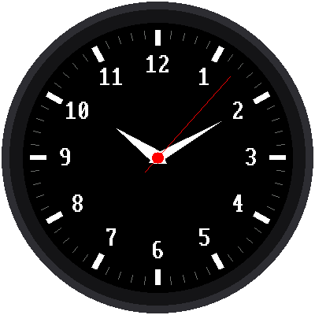

Lab 05: An Analog Watch Face

"Analog" means a clock with hands that sweep around a dial. This lab draws a complete watch face: 60 tick marks, the numbers 1 to 12, and hour, minute, and second hands that move. It even sets its own time from the internet when it starts.
Welcome to Lab 05
 Now your kit starts to look like a real watch. The math that swings
these hands around is the same math that turns and aims characters in
video games. Let's make time tick!
Now your kit starts to look like a real watch. The math that swings
these hands around is the same math that turns and aims characters in
video games. Let's make time tick!
What You Will Learn
- how to point a hand at any angle around a circle
- how to move something on a screen without redrawing everything
- why the layout of a watch face matters to the program
Run It
Open 05-analog-watch-face.py in Thonny and click Run. First the
screen says "Setting clock" while it asks the internet for the time, as
in lab 04. Then the watch face appears and the
second hand starts ticking.
No WiFi?
Near the top of the program, change SYNC_WITH_WIFI = True to
SYNC_WITH_WIFI = False. The watch will then use the time Thonny set.
Pointing a Hand Around a Circle
Every hand starts at the center and points out at an angle. The second hand moves 6 degrees every second, because 60 seconds × 6 degrees = 360 degrees, a full circle.
To find where the tip of a hand goes, the program uses two math tools called sine and cosine. They turn an angle into "how far across" and "how far down." You'll learn them in high school, but you can use them now:
1 2 | |
In the program, this math lives in a function called point(), which
every hand and tick mark uses. Why the minus sign? Remember from
lab 02 that on a screen,
y gets bigger as you go down. The minus flips it, so the 12 is at the
top.
Strange-Looking Math?
If sine and cosine look strange, that's normal, since most people don't
meet them until high school. You already placed things by x and y in
lab 02, and these two tools just turn an angle into an x
and a y. The point() function does the math for you, so all you pick
is an angle and a length.
Moving Without Flicker
Clearing the whole screen and redrawing every tick, number, and hand once a second would make the watch flicker. So the program draws the dial only once, at the start. After that, each second it:
- erases the old second hand by drawing it again, in black
- repairs anything the black line cut through, like part of a number
- draws the hands in their new positions
It's like moving a sticker on a poster: you peel it off, touch up the paint underneath, and stick it on in the new spot.
The watch face is designed to make step 2 easy. The tick marks sit outside where any hand reaches, so a hand can never cut through them. The numbers sit outside the hour and minute hands, so only the long second hand ever crosses a number, and never more than one at a time.
Try This: Break It on Purpose
Near the top of the program, change MINUTE_LENGTH = 92 to
MINUTE_LENGTH = 120. Run it and watch the numbers as the minute
hand passes over them. They get chewed up! The minute hand now reaches
into the numbers, and the program doesn't repair them after erasing
it. Change it back to 92 when you're done.
More to Try
- Change
SECOND_COLORfromconfig.REDtoconfig.CYAN. - Make the hour hand fatter by changing
HOUR_HALF_WIDTH. - The program has a list of what's on the dial. Can you find where it draws the numbers, and make them yellow?
Make It Your Watch
When the Pico is powered on, it automatically runs a file named main.py
if there is one. Save a copy of this lab to the Pico as main.py, and
your watch starts on its own, even with no computer attached.
Your Watch Has Hands!
 You aimed a hand at any angle with sine and cosine, and you moved it
without flicker by erasing, repairing, and redrawing. Next, you'll test
the three buttons so your watch can take orders.
You aimed a hand at any angle with sine and cosine, and you moved it
without flicker by erasing, repairing, and redrawing. Next, you'll test
the three buttons so your watch can take orders.
Next: Lab 06: Test the Buttons